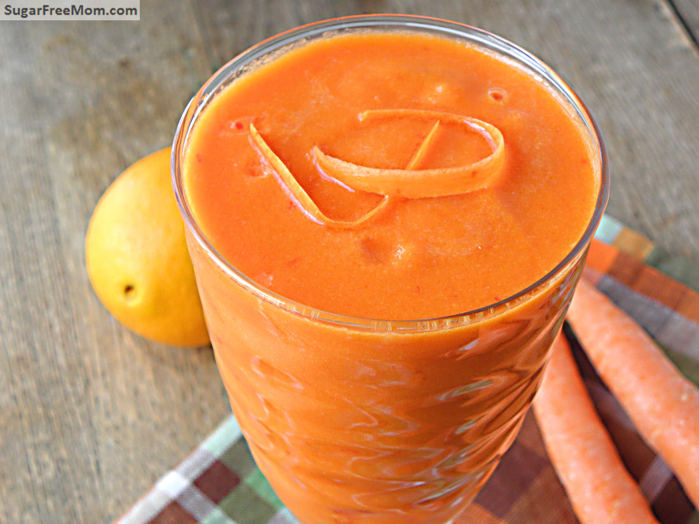
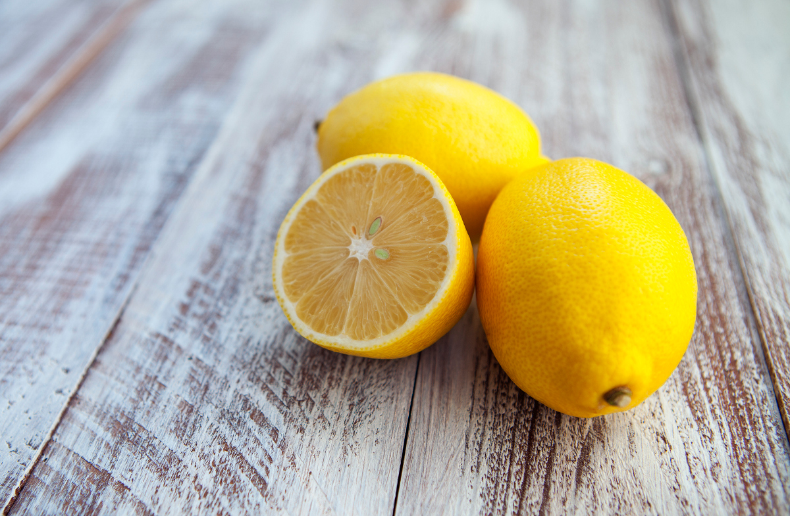
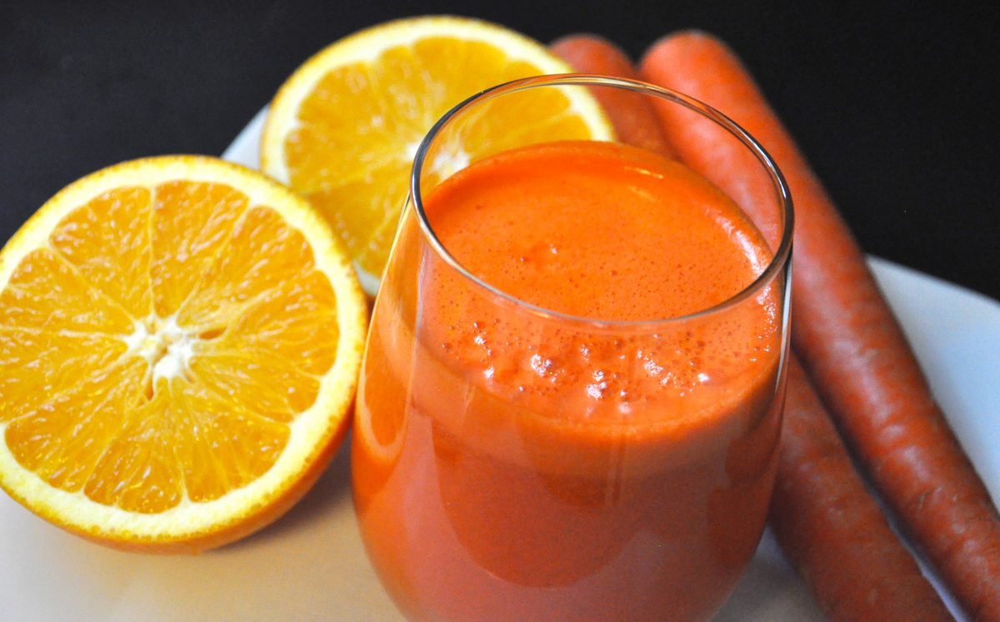

Tis is a marketing blog.
Check out the Hot Topic below for the newest update or get more details in the Category
Also you can find your nearest Warung Juice or Dadakans Juice Booth for buying our beloved healthy chemistry >Here<
Lemonade Carrot
Benefits of Carrot Juice

Carrot juice is extracted from whole carrots and extremely nutritious.
It not only provides potassium and vitamin C but also is very rich in provitamin A. Drinking carrot juice is thought to boost immunity and improve eye and skin health, among other benefits.
Instead of buying sugar and chemical-filled juices with little nutritional value, I love to drink freshly made juices, full of vitamins, minerals, and antioxidants. This Mango Juice is made from one of my favorite fruits, and with a hint of lemon and ginger, this drink is sure to blow your mind
Here are 8 impressive benefits of carrot juice.
Highly Nutrituous
Carrot juice is low in calories and carbs while packing numerous nutrients. One cup (240 mL) contains.
Calories: 96
Protein: 2 grams
Fat: less than 1 gram
Carbs: 22 grams
Sugars: 9 grams
Fiber: 2 grams
Vitamin A (as provitamin A): 255% of the Daily Value(DV)
Vitamin C: 23% of the DV
Vitamin K: 31% of the DV
Ptassium: 15% of the DV
May Improve Eye Health
Carrot juice contains high amounts of nutrients that benefit your eyes. Specifically, 1 cup (250 ml) of carrot juice packs over 250% of the DV for vitamin A, mostly in the form of provitamin A carotenoids like beta carotene. Vitamin A is vital for eye health. Several studies associate the intake of fruits and vegetables that contain provitamin A with a decreased risk of blindness and age-related eye diseases.
What’s more, carrot juice is an excellent source of lutein and zeaxanthin, two other carotenoids that accumulate in your eyes and shield them from damaging light. A high dietary intake of lutein and zeaxanthin may lower your risk of eye issues, such as age-related macular degeneration (AMD). One analysis of 6 studies linked a high dietary intake of these compounds to a 26% lower risk of late AMD, compared with a low intake.
May Boost Immunity
Carrot juice may give your immune system a boost. Both vitamins A and C found in carrot juice act as antioxidants and protect immune cells from free radical damage. Additionally, this juice is a rich source of vitamin B6, providing over 30% of the DV in 1 cup (240 mL). Not only is vitamin B6 necessary for an optimal immune response, but deficiency in it is also linked to weakened immunity. In fact, one rodent study found that inadequate dietary intake of vitamin B6 prohibited the growth of immune cells called lymphocytes.
May Provides Anti Cancer Effects
Test-tube studies suggest that certain compounds in carrot juice may protect against cancer. Specifically, polyacetylenes, beta carotene, and lutein from carrot juice extract may be effective against human leukemia cells. One test-tube study found that treating leukemia cells with carrot juice extracts for 72 hours led to cancer cell death and stopped the cell growth cycle.
Another test-tube study reported similar results but indicated that polyacetylenes — not beta carotene or lutein — are the main anticancer agents in carrot juice. While these results appear promising, few human studies are available. A 2-week study in 22 healthy young men found that drinking approximately 1.5 cups (330 mL) of carrot juice per day didn’t significantly affect biomarkers in feces related to colon cancer. Still, this was a short study with a limited sample size.
Overall, more extensive research is needed. Carrot juice should not be considered a cancer treatment.
Benefits of Lemon

Lemons are one of the most common types of citrus fruits, and their juices are usually used during cooking. But adding more lemon juice to your baking may be more beneficial than simply improving taste. It's been used as a natural health hack for centuries, due to its antibacterial properties.
Lemons are also rich in vitamin C, calcium, potassium, and folate, all of which provide useful benefits for the body. "There’s more to lemons than meets the eye," said US healthcare provider UPMC. "This fruit may pair well with some of your favorite dishes, but it also offers incredible health benefits. "Lemons are packed with nutrients, promote weight loss, and have even been linked to kidney stone prevention."
Boost Digestion
Lemons could reportedly improve your digestion, it said. The pulp contains a type of fibre that encourages the production of enzymes. These enzymes help to get rid of unwanted waste from the body. Combining the lemon pulp with the fruit's peel could also lower your risk of constipation.
Kidney Stones
You could lower your chances of developing kidney stones by adding more lemon juice to your diet, added UPMC. The juice prevents a build-up of calcium, which would otherwise lead to kidney stones. "Lemon juice is shown to help prevent kidney stones by raising the urine’s citrate levels," it said. "Citrate binds to calcium, which helps keep kidney stones from forming."
Weight Loss
Some people that are trying to lose weight have suggested adding more lemon juice to your diet. The juice contains pectin, which increases satiety - the sensation of feeling full for longer. Increasing satiety lowers your chances of snacking later in the day, which would add more calories to your diet. Lemon's high fibre content could also lead to lower body weight and fat, it said.
Carrot Juice With Lemonade (MIX)

Drinking cerrot juice with lemon could gives us both benefits from those two world of propaganda. Here is some video i found on youtube. have a nice watch instead of reading this full page text.
All Comment